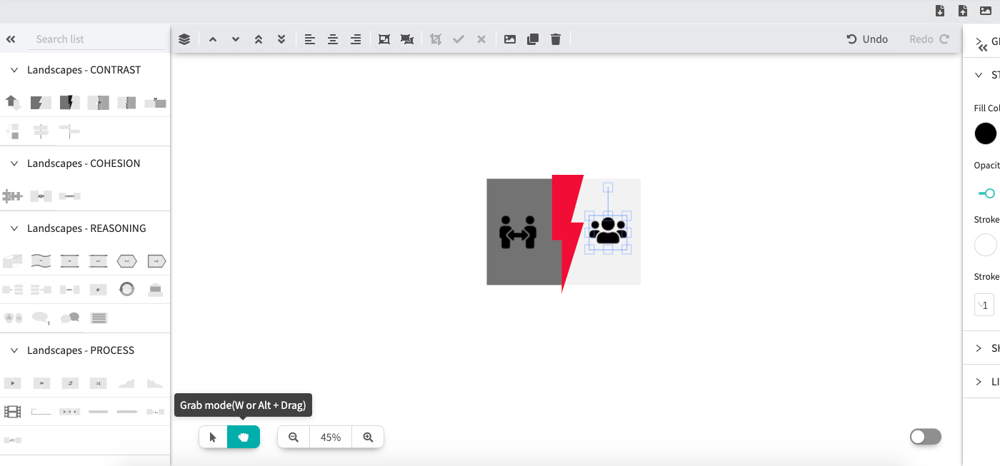
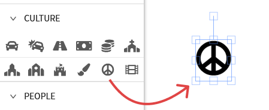
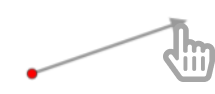
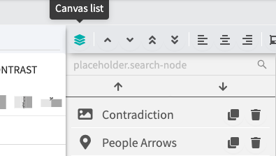
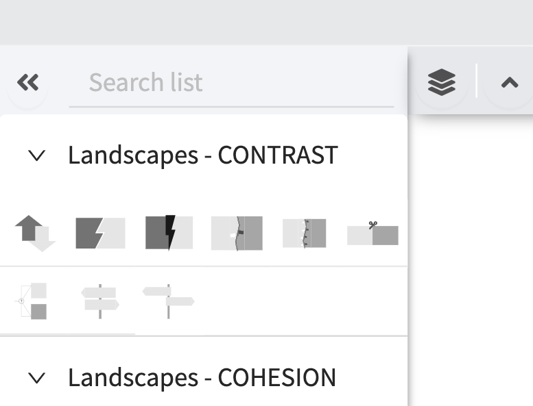
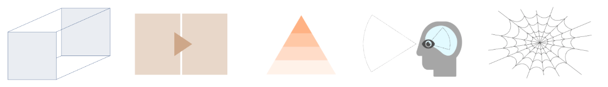
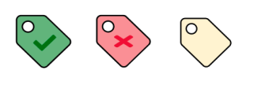
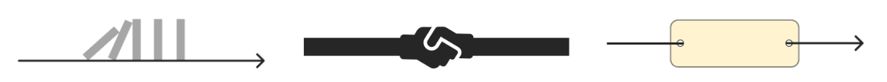

User Manual
Prototype 1
How to use Visualink
The map
The map is where you create your visualizations. You can navigate the map by selecting grab mode and dragging the map around. Zoom in and out by either clicking the buttons or using your mouse / touchpad.
Visual library
All graphics that you can use for your visualizations are displayed on the left sidebar. To put landscapes, objects, properties or relations on the canvas, drag-and-drop them from the sidebar to the map.
For connections (lines and arrows), click once on the map to determine the starting point and a second time for the ending point. The text field will appear on the map once selected. Then you can drag it around to the intended position.
Toolbar
On the left side of the top toolbar, you will find the canvas list, where all elements on your map are displayed. You can select, clone (copy-paste) and delete them from here. On the rest of the toolbar you can change layers, align objects, group, and also export your image.
Options
Once you select an item by clicking on it, design options will appear on the right sidebar. Depending on the type of element, there will be different options available to you. If you are missing a function, do not hesitate to contact us!
Where to find the visual elements
Visualink has a large database of graphics tailored to academics’ needs, and it is growing daily. You can use the search function on the left sidebar to browse the whole library. But this is not the only way to find the items you need. Here is an overview of the types of elements in Visualink, how to use them, and where to find them.
Landscapes
Landscapes are the foundation of your graphics. They provide an environment which makes it easy to grasp the essence of a concept, theory or idea. People already talk of the “larger picture” of a theory, right? This is taking it literally.
Objects
The core of almost each visualization consists of objects. They are depicted by little icons. Some of them you already know from your everyday life, some are specific for certain academic fields.
Properties
How do you depict that an object is red? Well, you just color it red. But how to depict that a sentence is true, that a rule is just, that a person is virtuous? For such cases, we have created property labels, which you can customize to depict every property you can think of by dragging an icon or text on top.
Relations
The lines and arrows in other graphic editors are often not very helpful when it comes to visualizing more complex matter. You need further specification: what are those relations you are depicting? You can either browse the catalogue or customize a relation by adding icons or text to label it.
How to save the graphics
For now, we are not saving any data online. If you want to save your graphics for later re-editing, you have to download the file and store it yourself. Here is how:
- Click the download button in the top-right corner for saving your file.
- If you want to re-edit the graphics later, just start the editor and upload your file by clicking the upload button.
- If you want to export a graphic as a PNG image, click on “save image”. In that case, the PNG image will show the part of the Visualink map that is currently visible.
You can also take screenshots, but in any case, please make sure to attribute Visualink when presenting your graphics. Thank you! :)
Contact us
whimstartup@gmail.com